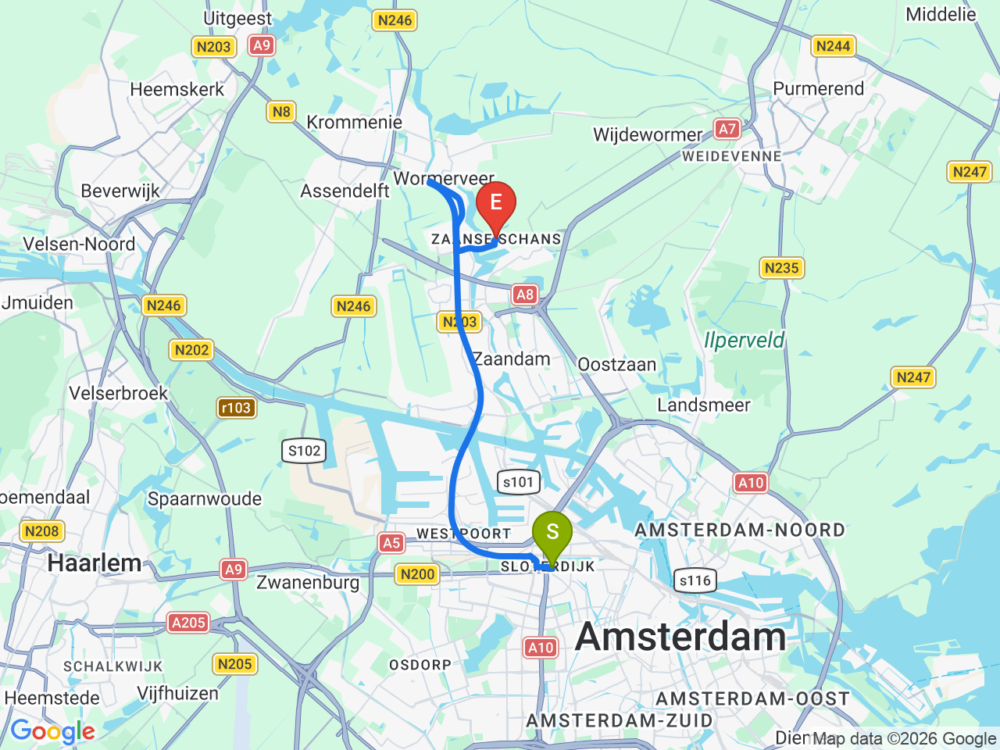
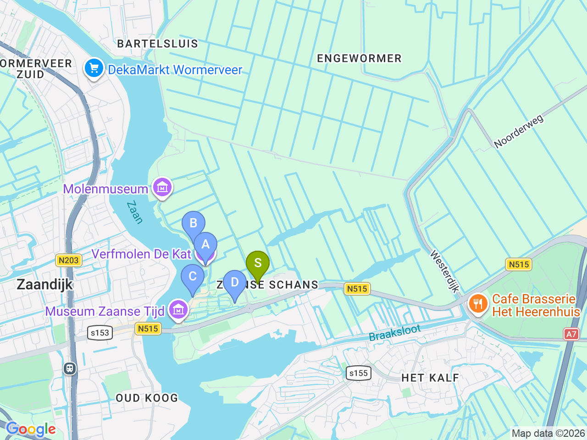
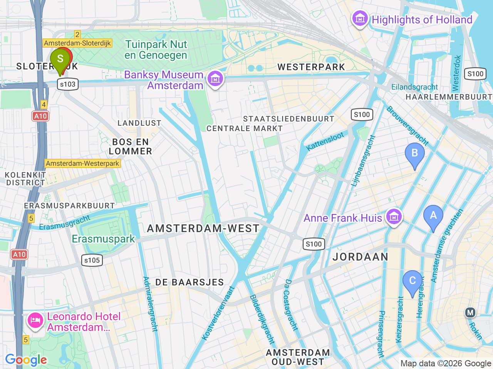

Day 03 · 2026-08-18（二）
荷蘭・阿姆斯特丹 Day 3/6
贊斯堡風車村半日遊 & 約旦區美食散步
上午近距離參觀風車與起司木鞋工坊，下午轉戰約旦區小巷弄，品嚐薯條與蘋果派
市區來回風車村

風車村景點區域

阿姆斯特丹市區（含飯店）

固定時間行程DAY 03
| 時間 | 地點 | 地點 (英文) | 交通方式／班次 | 價格 | 預計停留(分鐘) | 備註 |
|---|---|---|---|---|---|---|
| 風車村 | 1Zaanse Schans | 步行10-15分鐘至Sloterdijk→火車約6分鐘至Centraal→800/801路巴士約46分鐘（中央車站北側水邊巴士站搭車） | 套票約 €17.5-29.5（含風車內部＋Zaans Museum＋任選2座風車） | 約120-150分鐘 | 2026夏季（3/15-10/18）800/801為特別路線，每15分鐘一班，原391路暫停；回程同路線巴士約46分鐘返回 Amsterdam Centraal |
彈性探索景點DAY 03
| 地點 | 地點 (英文) | 預計停留(分鐘) | 價格 | 備註 |
|---|---|---|---|---|
| De Kat 風車（顏料磨坊） | ADe Kat Windmill, Zaanse Schans | 約30分鐘 | 套票含 | 1664年建造，現役顏料/染料磨坊 |
| Het Jonge Schaap 風車（鋸木廠） | BHet Jonge Schaap Windmill, Zaanse Schans | 約20分鐘 | 套票含 | |
| De Huisman 風車（香料磨坊） | CDe Huisman Windmill, Zaanse Schans | 約20分鐘 | 套票含 | |
| Zaans Museum ＋ 起司/木鞋工坊 | DZaans Museum, Zaanse Schans | 約45分鐘 | 套票含 | |
| 午餐：Restaurant De Kraai | FRestaurant De Kraai, Zaanse Schans | 約45分鐘 | 見上方三餐資訊 | 贊斯堡風車村園區內餐廳，套票通常含九折優惠 |
| Heertje Friet | GHeertje Friet, Herengracht 169, Amsterdam | 約20分鐘 | 約 €4-6 | Herengracht 運河邊薯條攤 |
| Winkel 43 | HWinkel 43, Noordermarkt 43, Amsterdam | 約30-40分鐘 | 約 €5-7 | Noordermarkt 轉角，公認阿姆斯特丹最好吃蘋果派 |
| 九街小巷 & 約旦區逛街 | IDe 9 Straatjes, Amsterdam | 約60分鐘 | 特色小店、古著、設計師小物，隨興逛 |
每日三餐
午餐
晚餐
Café 't SmalleCafé 't Smalle約 €15-25／人
📍 Egelantiersgracht 12, Amsterdam約旦區運河邊經典 bruin café（荷式棕色小酒館），輕鬆吃 stamppot / bitterballen 收尾
住宿資訊
XO Hotels Park West
📍 Molenwerf 1, 1014 AG Amsterdam